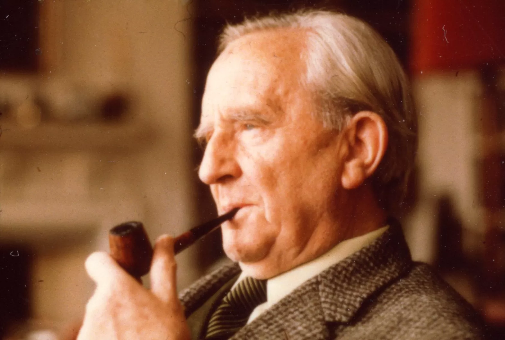

O Hobbit
Narra a aventura de Bilbo Bolseiro, um hobbit que parte em uma jornada com anões e o mago Gandalf.
O criador da Terra-média e um dos grandes nomes da literatura fantástica.
J.R.R. Tolkien foi um escritor, professor e filólogo britânico, conhecido principalmente por suas obras O Hobbit e O Senhor dos Anéis.
Seu trabalho ajudou a formar a literatura fantástica moderna, criando povos, idiomas, mapas, histórias antigas e uma mitologia completa para a chamada Terra-média.

Tolkien escreveu histórias que misturam aventura, amizade, coragem, sacrifício e uma forte ideia de luta entre o bem e o mal.
Narra a aventura de Bilbo Bolseiro, um hobbit que parte em uma jornada com anões e o mago Gandalf.
Conta a missão de Frodo para destruir o Um Anel e impedir o domínio de Sauron.
Apresenta a origem do mundo criado por Tolkien e histórias antigas da Terra-média.
Veja uma lista simples com obras importantes ligadas ao universo de Tolkien: